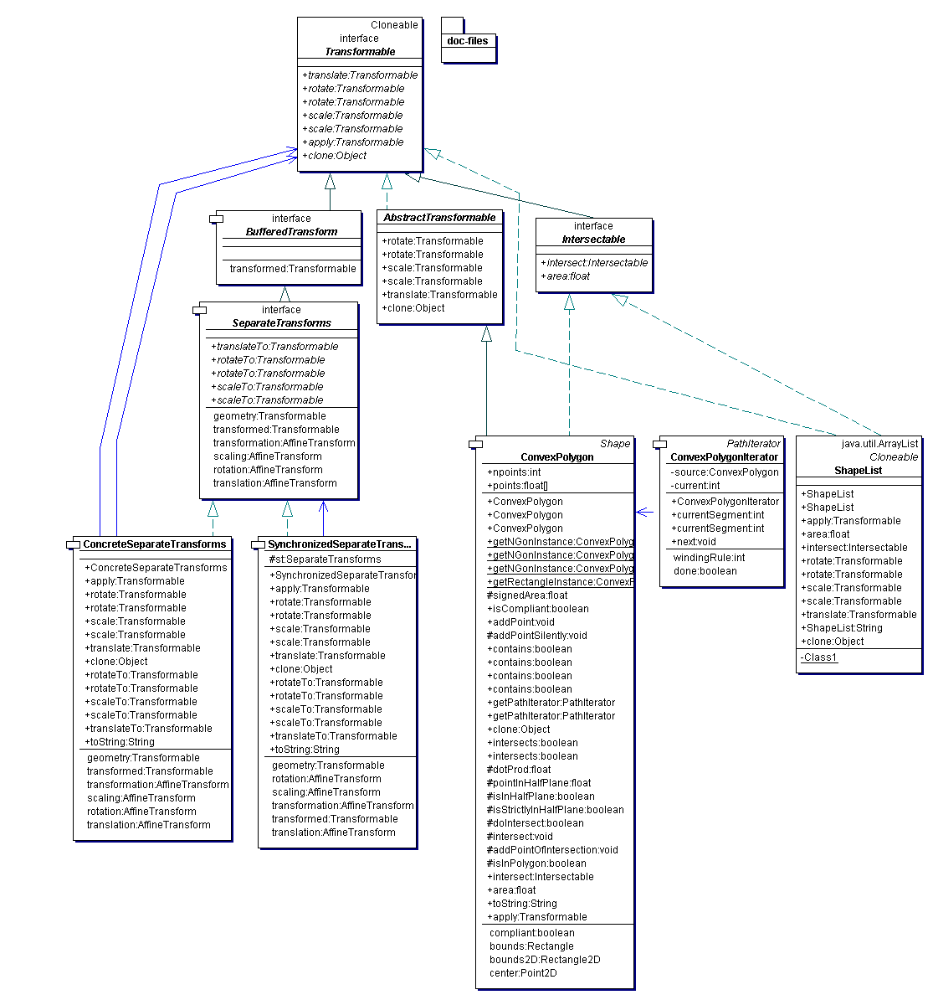

|
The Physiologist's Friend Simulation API | ||||||||
| PREV PACKAGE NEXT PACKAGE | FRAMES NO FRAMES | ||||||||
See:
Description
| Interface Summary | |
|---|---|
| BufferedTransform | Allows for uniform access to Transformable objects
that want/need to buffer the transformations applied to them. |
| Intersectable | Declares the interface for a Transformable that can be
intersected with another shape. |
| SeparateTransforms | Provides the interface to keep a geometric object in its original state while buffering applied transformations separately. |
| Transformable | Interface a transformable geometric object might implement. |
| Class Summary | |
|---|---|
| AbstractTransformable | Provides default implementations for all methods of Transformable
except apply on which all other methods depend. |
| ConcreteSeparateTransforms | Provides the facilities to keep a geometric object in its original state while buffering applied transformations. |
| ConvexPolygon | This class implements the notion of a convex polygon. |
| ConvexPolygonIterator | ConvexPolygonIterator implements the PathIterator
interface for ConvexPolygon. |
| LMSColor | Represents a color in the LMS color space. |
| ShapeList | An ArrayList of shapes which are Transformable and Intersectable as a whole. |
| SynchronizedSeparateTransforms | Wrapper for SeperateTransforms to be thread-safe. |
Graphics objects and interfaces.
The heart of the graphics package are the interfaces Transformable
and Intersectable. Transformable means that the object can be transformed
by a number of methods, and Intersectable means that the object's area can be computed and its intersection shape with
other Intersectable can be obtained.
The transformations that can be applied are buffered -- each of the possible
transforms (rotations, scaling, and translation} are separately buffered and each can be manipulated.
The possible transformations are specified by the interface SeparateTransforms.
Another interface, BufferedTransform, specifies how the resulting
Transformable can be obtained with the transforms applied.
The basic shape is a ConvexPolygon, which is a Transformable that inherits its
transformation methods from AbstractTransformable.
A ShapeList is a collection of Transformable that can be transformed as a whole.
The basic transform is ConcreteSeparateTransforms, which implements
SeparateTransforms.
The relation between a shape like a ConvexPolygon and its SeparateTransforms should be kept clear.
The transforms are constructed from a shape. This lets the transforms implement BufferedTransform.getTransformed()
so that you can obtain the transformed shape.
The relation between buffered transforms and transformations should also be kept clear.
A Transformable can be transformed, and a SeparateTransforms can have
its component transformations individually set.
Here is the UML diagram for this package:

|
http://www.ini.unizh.ch/~tobi/friend | ||||||||
| PREV PACKAGE NEXT PACKAGE | FRAMES NO FRAMES | ||||||||